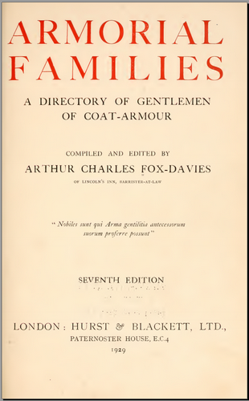

Armorial Families - A directory of Gentlemen of Coat Armour by A.C. FOX-DAVIES, 7th edition, Hurst & Blackett, London 1929
These 2 volumes contain 2,200 searchable pages of fantastic detail and beautiful images of full achievements. In addition to the arms, mottoes and family details the entries include the residential address of the contemporary holder and their London clubs!
Good scan quality, almost all pages clearly readable, image quality good to excellent. OCR accuracy 95%+
Note that these volumes contain quite an extensive addenda at the end of volume, which should be checked for updates after consulting the main entries.
Contents (Page numbers refer to the PDF version pages):
Volume I ( armorialfamilies01foxd ) Prefaces 17 The Abuse of Arms 21 The Ancient Families of England 43 Armorial Families, A to H 53 - 1082 Volume II ( armorialfamilies02foxd ) Armorial Families I to Z 13 - 1179 Appendix (Addenda) 1180 Index to Plates 1195 Index of Quarterings 1205 (some folding obscures left column in places) Escutcheons of pretence 1207
NOTES: The fifth edition is also available in a single volume as armorialfamilies00foxd, but this has pages missing and is generally in much poorer condition.